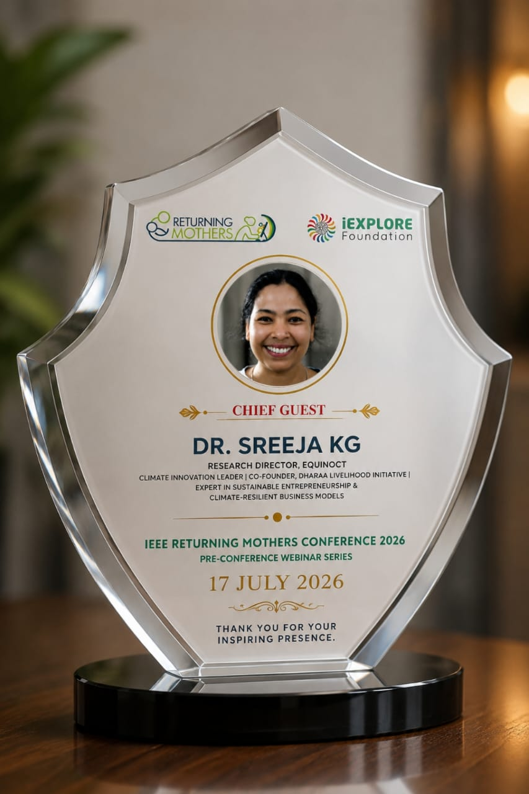
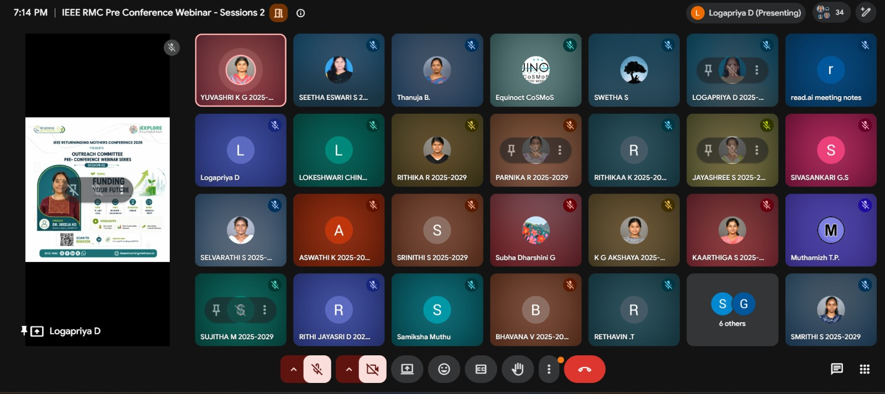
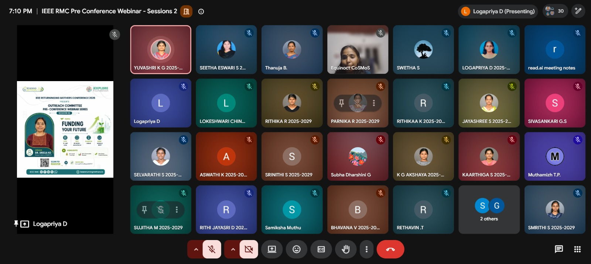
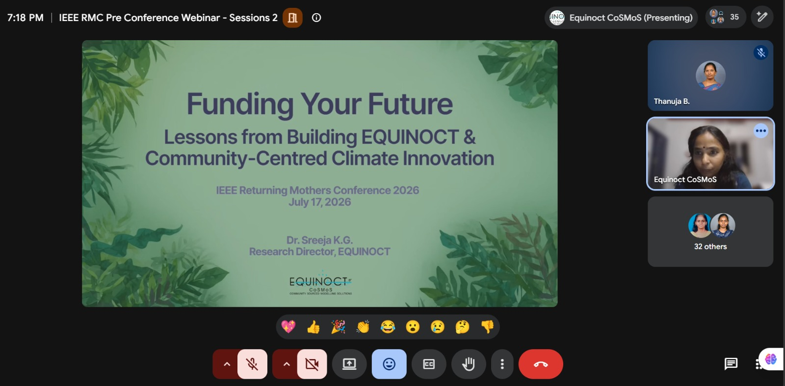
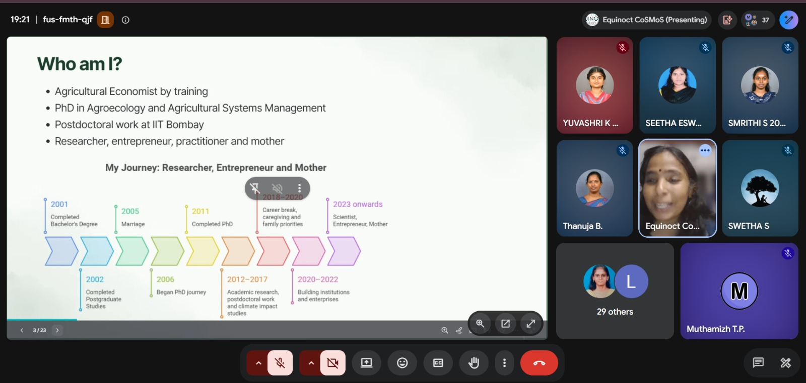
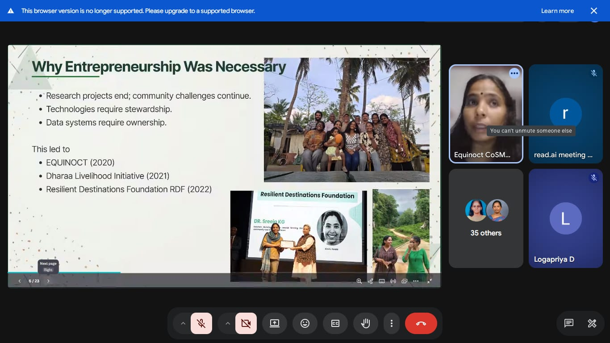

IEEE RMC 2026 · Pre-Conference Webinar Series · Session 2
Funding Your Future
Lessons from Building EQUINOCT & Community-Centred Climate Innovation
17 July 2026 · Online via Google MeetDr. Sreeja K.G. · Research Director, EQUINOCT35 participants
About the webinar
Introduction
As part of the IEEE Returning Mothers Conference 2026 Pre-Conference Webinar Series, the second session, titled “Funding Your Future: Lessons from Building EQUINOCT & Community-Centred Climate Innovation,” was organized to provide participants with insights into entrepreneurship, climate innovation, community-driven solutions, and funding opportunities.
Conducted online through Google Meet on 17 July 2026, the session featured Dr. Sreeja K.G., Research Director, EQUINOCT, and was organized by the IEEE Returning Mothers Conference 2026 Outreach Committee.
The session brought together 35 students, researchers, professionals, aspiring entrepreneurs, and people interested in climate innovation and entrepreneurship. Drawing on her experience building EQUINOCT and other community-focused initiatives, Dr. Sreeja shared insights into the transition from research to entrepreneurship, community-led climate data, organizational structures, funding ecosystems, and the challenges and opportunities entrepreneurs face.
Learning goals
Objectives of the Session
Provide insights into the journey from academic research to entrepreneurship.
Highlight the importance of community-driven data in addressing hyperlocal climate challenges.
Explain organizational structures for innovation and social impact.
Introduce participants to different stages of the funding ecosystem.
Help aspiring entrepreneurs understand the importance of credibility, evidence, partnerships, and persistence.
Highlight the strengths and skills gained through career breaks and life experiences.
Encourage participants to focus on solving meaningful problems and creating long-term value.
The speaker's experience
Personal and Professional Journey
Dr. Sreeja K.G. shared her non-linear professional journey, beginning with an academic background in agricultural systems management and agroecology, followed by research and postdoctoral work in climate change impact assessment. She explained how research, family responsibilities, career breaks, and community engagement contributed to her transition into entrepreneurship.
Her journey showed that professional growth does not always follow a linear path and that personal experiences can contribute significantly to entrepreneurial resilience and leadership.
Ideas and insights
Event Overview
Addressing Community Climate Data Gaps
The session highlighted the gap between global climate research and the realities faced by local communities. Although climate change is a global issue, its impacts are often experienced at a hyperlocal level. Community-led data collection and local participation can help address climate risks. Community members contribute valuable local data and play an active role in developing solutions, strengthening local agency and resilience.
Transition from Research to Entrepreneurship
The transition from academic research to entrepreneurship was discussed as a response to the need to put research-based solutions into practice. Research generates knowledge, while independent enterprise structures can help implement solutions and ensure community ownership. Dr. Sreeja’s experience as a researcher and parent also highlighted the importance of responsibility, persistence, and problem-solving in entrepreneurship and personal life.
Organizational Structures for Innovation and Social Impact
Different organizational structures serve different purposes: startups can support innovation, social enterprises can enable impact-driven initiatives, and Section 8 companies can facilitate greater community participation. Choosing the right structure helps support innovation, community inclusion, funding access, and long-term sustainability.
EQUINOCT and Its Three Pillars
EQUINOCT combines scientific knowledge, technology, data, and community participation to develop practical responses to climate-related challenges. Its three pillars are:
Community-Sourced Science
Technology and Modelling
Livelihood and Resilience Solutions
Understanding the Funding Ecosystem
Good ideas alone do not guarantee funding. Successful funding depends on credibility, evidence, partnerships, persistence, and timing. The funding journey can include seed grants for early-stage ideas, innovation funds for prototypes, CSR and challenge grants for pilot projects, and government or blended finance for scaling.
Building Credibility Before Scaling
Entrepreneurs were encouraged to start small, generate evidence, document impact, and gradually build credibility before seeking large-scale funding. Trust is one of the most valuable forms of capital for an enterprise. Partnerships with local governments, universities, civil society organizations, and communities can strengthen credibility and impact.
Entrepreneurship and Problem-Solving
Participants were encouraged to solve meaningful and persistent problems rather than simply complete projects. Dr. Sreeja advised entrepreneurs to focus on problems they care about, understand real community needs, build evidence and document impact, develop strong networks, apply for grants without waiting until they feel completely ready, and make use of incubators, startup missions, and other support ecosystems.
Challenges Faced by Entrepreneurs
The speaker openly discussed low success rates in grant applications, proposal-writing fatigue, financial uncertainty, team-building challenges, and balancing family responsibilities with professional commitments. The discussion highlighted the importance of persistence, adaptability, and resilience.
Strengths of Returning Professionals
Experiences related to parenting, caregiving, health, and personal responsibilities can develop skills that are valuable in entrepreneurship and leadership, including:
Systems thinking and empathy
Negotiation and time-management skills
Resilience and problem-solving abilities
Q&A Session
Participants asked what the speaker learned before applying for her first grant. Dr. Sreeja explained that choosing an organizational structure is an important early decision and that it should align with the organization's purpose and intended funding. She also emphasized that combining state-of-the-art technology with community-led co-creation can create meaningful, scalable solutions and attract international funders and collaborators.
At a glance
Key Takeaways
A career path does not need to be linear to be successful.
Prioritize meaningful problems over short-term projects; value creation and impact come before the pursuit of funding.
Community participation is essential for effective climate solutions.
Good ideas need credibility, evidence, partnerships, persistence, and timing to attract funding.
Small grants and pilot projects can generate evidence for larger funding opportunities.
Trust is one of the most valuable forms of capital for social enterprises.
Build strong networks and partnerships intentionally.
Career breaks can develop valuable entrepreneurial skills.
Apply for opportunities without waiting until you feel completely ready.
Looking ahead
Conclusion
The session provided valuable insights into entrepreneurship, climate innovation, community-driven development, funding strategies, and resilience. Dr. Sreeja K.G.’s journey demonstrated how research, personal experiences, community engagement, technology, and entrepreneurship can come together to create meaningful and sustainable impact.
The session concluded with a vote of thanks by Seetha Eswari S. and Thanuja B., followed by the presentation of an E-Memento to the speaker. Participants were encouraged to stay connected with the organizers and complete the feedback form.
The webinar encouraged participants to view entrepreneurship as a journey of problem-solving, resilience, collaboration, community engagement, and value creation.
Moments from the session
Event Gallery

E-Memento presented to Dr. Sreeja K.G.

Participants join the webinar online

Participants gather for the session

Funding Your Future: Lessons from Building EQUINOCT

Community trust as capital

EQUINOCT’s three pillarsFrom research to entrepreneurship